Qwen/Qwen3.5-9B
mean reward 0.401 · compile rate 46% · 120 valid rollouts. Blue = reference; green ≥ 0.9, orange ≥ 0.4, red below. Hover a tile for the generated OpenSCAD.
L1 · example 0 · mean 1.00 · max 1.00
A solid rectangular box 15mm wide, 15mm deep, and 35mm tall.

;")
L2 · example 1 · mean 0.00 · max 0.00
A solid hexagonal prism 35mm tall, 60mm across the flats, with two flats parallel to the x axis, with a 12mm-radius hole drilled vertically through the center of the entire part. The part sits on the z=0 plane, centered on the Z axis.


L5 · example 2 · mean 0.25 · max 1.00
Create a triangular prism standing 45mm tall: its base is a right triangle with legs of 20mm (along X) and 30mm (along Y) meeting at the origin.


polygon(points=[
[0,0],
[20,0],
[0,30]
]);")

[0, 2, 5, 3], // back face (Y direction edges)
[0, 1, 4, 3] // front face (hypotenuse edge)
]
);")
L4 · example 3 · mean 0.16 · max 0.62
A solid hexagonal prism 50mm tall, 40mm across the flats, with two flats parallel to the x axis, with a 3mm-radius hole drilled vertically through the center of the entire part; and a cone of base radius 12mm and height 20mm standing centered on its top face, apex up. The part sits on the z=0 plane, centered on the Z axis.


circumradius = hex_flat_to_flat / sqrt(3);
difference() {
// Hexagonal prism
cylinder(
h = hex_height,
r = circumradius,
$fn = 64
);
// Hole through center
translate([0, 0, -0.1])
cylinder(
h = hex_height + 0.2,
r = hole_radius,
$fn = 64
);
// Cone on top, apex up
difference() {
translate([0, 0, hex_height])
cylinder(
h = cone_height,
r = cone_radius,
$fn = 64
);
translate([0, 0, hex_height + cone_height - 0.5])
cylinder(
h = 1,")
L1 · example 4 · mean 0.50 · max 1.00
A solid cylinder 25mm tall with a radius of 20mm, standing upright.

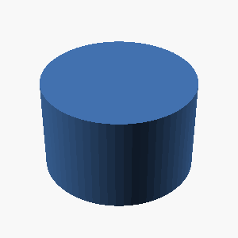
L5 · example 5 · mean 0.46 · max 1.00
Create a triangular prism standing 25mm tall: its base is a right triangle with legs of 45mm (along X) and 30mm (along Y) meeting at the origin.

 {
polygon(points = [[0, 0], [45, 0], [0, 30]]);
}")
 {
polygon([
[0, 0],
[45, 0],
[0, 30]
]);
}")
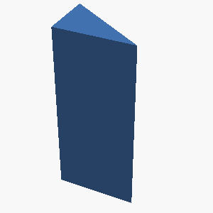
L3 · example 6 · mean 0.20 · max 0.79
A solid hexagonal prism 25mm tall, 50mm across the flats, with two flats parallel to the x axis, with 4 holes of radius 2mm drilled vertically through it, evenly spaced on a circle of radius 18.1mm around the center, the first hole on the +X axis; and a 8mm-radius hole drilled vertically through the center of the entire part. The part sits on the z=0 plane, centered on the Z axis.

 {
// Base hexagonal prism (50mm across flats, so R = 50/√3 ≈ 28.8675mm)
R = 50 / sqrt(3);
translate([0, 0, -13])
linear_extrude(height=25, center=true)
polygon([
[R*cos(30), R*sin(30)],
[R*cos(90), R*sin(90)],
[R*cos(150), R*sin(150)],
[R*cos(210), R*sin(210)],
[R*cos(270), R*sin(270)],
[R*cos(330), R*sin(330)]
]);
// Central 8mm-radius hole
translate([0, 0, -26])
cylinder(h=2*26, r=8, $fn=64);
// Four 2mm-radius holes on circle of radius 18.1mm
for (i = [0,1,2,3]) {
angle = i * 90;
translate([18.1*cos(angle), 18.1*sin(angle), -26])
cylinder(h=2*26, r=2, $fn=64);
}
}")
L4 · example 7 · mean 0.00 · max 0.00
A solid hexagonal prism 50mm tall, 35mm across the flats, with two flats parallel to the x axis, with hollowed out from the top into an open container with 5mm thick walls and floor. The part sits on the z=0 plane, centered on the Z axis.

;
inner_rs = outer_rs - wall_floor_thickness;
// Outer hexagon (floor at z=0, extends to z=hollow_prism)
outer_hex = polygon(
points = [
[[0, 0], [0, hollow_prism]],
[[outer_rs, 0], [outer_rs, hollow_prism]],
[[-outer_rs, 0], [-outer_rs, hollow_prism]],
[[0, 0], [0, hollow_prism]]
],
segments = 6,
fill = true,
center = [0, 0, hollow_prism/2],
rs = outer_rs
);
difference() {
// Outer solid prism
hexagon(rs = outer_rs, h = hollow_prism);
// Remove inner hollow space
// Hollow starts from floor (wall thickness) to top
translate([0, 0, wall")
L5 · example 8 · mean 0.86 · max 1.00
Create a 35mm-tall prism shaped like a plus sign, formed by two perpendicular 60mm x 20mm bars crossing at their midpoints.

 {
// Bar 1: 60mm along X-axis, 20mm along Y-axis, 35mm height (Z-axis)
cube([60, 20, 35], center=true);
// Bar 2: 20mm along X-axis, 60mm along Y-axis, 35mm height (Z-axis)
cube([20, 60, 35], center=true);
}")
 {
cube([60, 20, 35], center=true);
cube([20, 60, 35], center=true);
}")
 {
// Horizontal bar: 60mm long × 20mm wide × 35mm tall
translate([0, -10, -17.5])
cube([60, 20, 35]);
// Vertical bar: 20mm wide × 60mm long × 35mm tall
translate([-10, 0, -17.5])
cube([20, 60, 35]);
}")
L2 · example 9 · mean 0.93 · max 1.00
An open-top rectangular container with outer dimensions 55mm x 70mm x 55mm, wall and floor thickness 5mm.

 {
cube([55, 70, 55]);
translate([5, 5, 5])
cube([45, 60, 50]);
}")
 {
// Outer shell
cube([55, 70, 55]);
// Inner void (wall and floor thickness = 5mm)
translate([5, 5, 5]) cube([45, 60, 50]);
}")
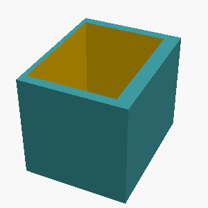
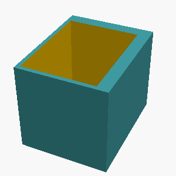
L3 · example 10 · mean 0.50 · max 1.00
A stepped circular shaft standing upright, made of 2 stacked coaxial cylinders from bottom to top: a section of radius 35mm and height 25mm, then a section of radius 20mm and height 20mm. Each section is narrower than the one below it.

 {
// Bottom section - larger diameter
cylinder(h=25, r=35, $fn=64);
// Top section - smaller diameter, stacked on top
translate([0, 0, 25])
cylinder(h=20, r=20, $fn=64);
}")
;
translate([0, 0, 25]) cylinder(r=20, h=20, $fn=64);")
L5 · example 11 · mean 0.00 · max 0.00
A flat rectangular plate 90mm x 50mm and 11mm thick, with a rounded slot cut all the way through its center: the slot is 64mm long along the X direction and 12mm wide, with semicircular ends.

L1 · example 12 · mean 0.75 · max 1.00
A solid rectangular box 10mm wide, 55mm deep, and 60mm tall.

;")
L2 · example 13 · mean 0.22 · max 0.88
A solid box 45mm x 25mm x 60mm with a rectangular notch 10mm wide and 13mm deep cut into the middle of its top face, running through the full depth of the box.

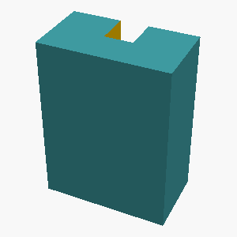
L5 · example 14 · mean 0.12 · max 0.46
A vertical prism 45mm tall whose footprint is a right triangle with one leg 35mm along the X axis and the other leg 20mm along the Y axis, right angle at the origin.

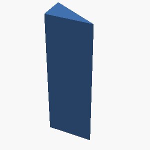
L4 · example 15 · mean 0.00 · max 0.00
A hexagonal prism (like a nut) 18mm tall, measuring 30mm across the flats, with a circular hole of radius 5mm drilled through its center along the axis.

 {
// Hexagonal prism - 18mm tall, 30mm across flats
polygon([
[17.32, 0, 9],
[8.66, 15, 9],
[-8.66, 15, 9],
[-17.32, 0, 9],
[-8.66, -15, 9],
[8.66, -15, 9],
[17.32, 0, 9],
[17.32, 0, -9],
[8.66, -15, -9],
[-8.66, -15, -9],
[-17.32, 0, -9],
[-8.66, 15, -9],
[8.66, 15, -9]
], convex_hull=true);
// Circular hole - 5mm radius drilled through center
cylinder(h=18, r=5, $fn=64);
}")
L1 · example 16 · mean 1.00 · max 1.00
A solid cylinder 60mm tall with a radius of 5mm, standing upright.

 cylinder(h=60, r=5, $fn=64);")
L5 · example 17 · mean 0.00 · max 0.00
A solid torus (donut shape) lying flat on the table: the ring's centerline circle has a radius of 15mm and the circular tube cross-section has a radius of 5mm.

;")
;")
;")
L3 · example 18 · mean 0.58 · max 0.77
A solid box 55mm wide (x), 50mm deep (y), and 25mm tall, with 3 holes of radius 2mm drilled vertically through it, evenly spaced on a circle of radius 18.1mm around the center, the first hole on the +X axis; and a horizontal hole of radius 3mm drilled along the X axis through the whole part at half its height, centered in Y. The part sits on the z=0 plane, centered on the Z axis.

 {
cube([55, 50, 25]);
// 3 vertical holes (radius 2mm) on a circle of radius 18.1mm
// First hole on +X axis
for(i = [0, 1, 2]) {
rotate([0, i * 120, 0]) {
// Position on circle in XY plane at radius 18.1mm, first at +X
rotate([90, 0, 0]) {
translate([18.1, 0, 0]) {
translate([0, 0, -12.5]) cylinder(h=25, r=2, $fn=64);
}
}
}
}
// Horizontal hole along X axis at z=12.5, centered in Y
cylinder(h=55, r=3, $fn=64);
}")
 {
// Main box: 55mm wide (x), 50mm deep (y), 25mm tall (z)
// On z=0 plane, centered on Z axis (so x and y span half-width/deep from center)
cube([55, 50, 25]);
// 3 vertical holes of radius 2mm, evenly spaced on circle of radius 18.1mm
// First hole on +X axis (0°), then 120° intervals
for (i = [0, 1, 2]) {
translate([
18.1 * cos(i * 2 * pi / 3),
18.1 * sin(i * 2 * pi / 3),
0
]) cylinder(h=25, r=2, $fn=64);
}
// Horizontal hole of radius 3mm along X axis at half height (12.5mm), centered in Y
translate([0, 0, 12.5]) cylinder(h=55, r=3, $fn=64);
}")
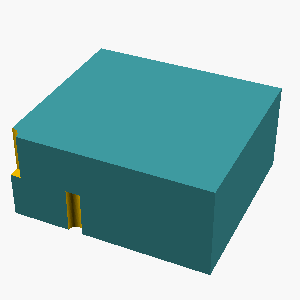
L4 · example 19 · mean 0.19 · max 0.75
A gear-like disc 6mm thick with radius 25mm, with 6 rectangular teeth evenly spaced around its rim. Each tooth is 5mm wide and extends 6mm radially outward from the rim, spanning the full thickness of the disc.

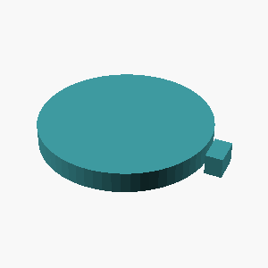
L5 · example 20 · mean 0.22 · max 0.87
A flat rectangular plate 75mm x 45mm and 5mm thick, with a rounded slot cut all the way through its center: the slot is 46mm long along the X direction and 12mm wide, with semicircular ends.

 {
// Main rectangular plate
cube([75, 45, 5]);
// Rounded slot cut through center (46mm long x 12mm wide)
// Slot goes from -23mm to +23mm in X (46mm total)
// Semicircular ends with radius 6mm (half of 12mm width)
// Middle straight section: 46 - 6 - 6 = 34mm
translate([0, 0, -2.5]) // Center through the plate thickness
union() {
// Long middle rectangle (34mm long between semicircles)
cube([34, 12, 5]);
// Left semicircular end (centered at -23mm, radius 6mm)
transform() {
translate([-23, -6, 0]);
cylinder(r=6, h=5, $fn=64);
}
// Right semicircular end (centered at +23mm, radius 6mm)
translate([23, -6, 0])
cylinder(r=6, h=5, $fn=6")
L2 · example 21 · mean 0.47 · max 1.00
A solid box 60mm x 30mm x 55mm with a rectangular notch 14mm wide and 7mm deep cut into the middle of its top face, running through the full depth of the box.

 {
cube([60, 30, 55]);
translate([23, 0, 48]) cube([14, 30, 7]);
}")
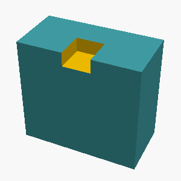
L3 · example 22 · mean 0.00 · max 0.00
A solid hexagonal prism 20mm tall, 40mm across the flats, with two flats parallel to the x axis, with a hemispherical dome of radius 7mm centered on its top face; and 4 holes of radius 2mm drilled vertically through it, evenly spaced on a circle of radius 13.1mm around the center, the first hole on the +X axis. The part sits on the z=0 plane, centered on the Z axis.

L5 · example 23 · mean 0.17 · max 0.69
Create a D-shaft: a 50mm-tall cylinder of radius 20mm whose +X side is sliced off by a vertical plane 13mm from the axis, leaving a flat running the full height.

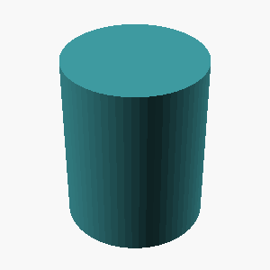
L1 · example 24 · mean 1.00 · max 1.00
A solid rectangular box 65mm wide, 50mm deep, and 20mm tall.

;")
L2 · example 25 · mean 0.52 · max 0.81
A solid box 30mm x 30mm x 30mm with a rectangular notch 10mm wide and 5mm deep cut into the middle of its top face, running through the full depth of the box.

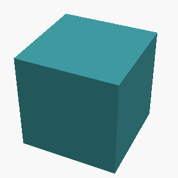
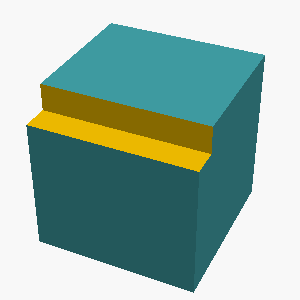
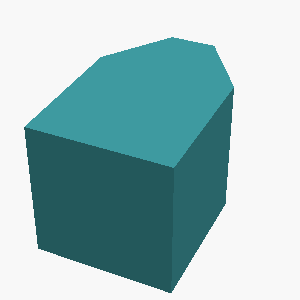
L5 · example 26 · mean 0.60 · max 0.93
Create a 65x45x15mm block with a centered vertical through-hole of radius 5mm, counterbored from the top face to radius 9mm over a depth of 9mm.

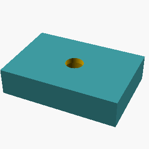
 {
cube([65, 45, 15]);
// Through-hole (radius 5mm, goes all the way through)
translate([32.5, 22.5, -7.5])
cylinder(h=15, r=5, $fn=64);
// Counterbore (radius 9mm, depth 9mm from top face)
translate([32.5, 22.5, 7.5 + 9])
cylinder(h=9, r=9, $fn=64);
}")
 {
// Main block
cube([65, 45, 15], center = true);
// Counterbore (larger radius, shallow depth)
cylinder(h = $d_counterbore, r = $r_large, $fn = 64, center = false);
// Through hole (smaller radius, full depth)
translate([0, 0, $d_counterbore])
cylinder(h = 15 - $d_counterbore, r = $r_small, $fn = 64);
}
// Reposition to have solid face at z = 0 instead of floating
translate([0, 0, -7.5])
rotate([0, 0, 0])
difference() {
cube([65, 45, 15], center = false);
cylinder(h = 15, r = $r_large, $fn = 64, center = false);
cylinder(h = 15, r = $r_small, $fn = 64);
};")
L4 · example 27 · mean 0.00 · max 0.00
A hexagonal prism (like a nut) 10mm tall, measuring 30mm across the flats, with a circular hole of radius 5mm drilled through its center along the axis.

 {
linear_extrude(height=10)
polygon(points = [[15, 0], [20.660254, 6.592583], [7.5, 15], [-7.5, 15], [-20.660254, 6.592583], [-15, 0], [20.660254, -6.592583], [-20.660254, -6.592583], [-7.5, -15], [7.5, -15]], convex=true);
cylinder(h=10, r=5, $fn=64);
}")
L1 · example 28 · mean 1.00 · max 1.00
A solid rectangular box 40mm wide, 40mm deep, and 20mm tall.

;")
L5 · example 29 · mean 0.36 · max 1.00
A plus-sign-shaped prism 15mm tall: two rectangular bars, each 65mm long and 10mm wide, cross at right angles at their centers (one along X, one along Y), centered on the Z axis.

 {
// X-aligned bar
cube([65, 10, 15], center=true);
// Y-aligned bar
cube([10, 65, 15], center=true);
}")
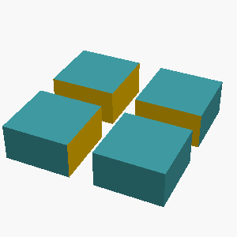